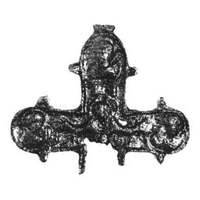

Catalog › CE-0732 · KOR2003-II.1.1.113
Fragment de valvă de față de encolpion, fără capătul de jos al crucii, reliefuri topite
sec. după model XII (datare V. G. Putsko, T. M. Hohlova) (1101–1200) · Serensk, raionul Meșciovsk, regiunea Kaluga, Rusia · Muzeul Regional de Studii Locale din Kaluga (KOKM), inv. КЛ 9204/65
single valve of a reliquary cross, aramă; c. după model XII (datare V. G. Putsko, T. M. Hohlova) (1101–1200); found at Serensk, raionul Meșciovsk, regiunea Kaluga, Rusia; kept at Muzeul Regional de Studii Locale din Kaluga (KOKM).


Identificare
- Categorie
- Valvă izolată
- Material
- Aramă
- Tehnică
- Turnare în relief
- Stare
- Fragmentară
- Dimensiuni
- Î 58 × L 71 mm
Iconografie
- Descriere avers
- Valva de față a unui encolpion, fragmentară (fără capătul de jos al crucii); reliefurile sunt topite.
Datare și atribuire
- Datare
- sec. după model XII (datare V. G. Putsko, T. M. Hohlova) (1101–1200)
- Centru
- Necunoscut
- Tipologie
- Korzukhina–Peskova 2003, tip II 1 1
Descoperire
- Localitate
- Serensk
- Regiune
- raionul Meșciovsk, regiunea Kaluga
- Țară
- Rusia
- Context
- Fortificație
- Anul
- 1965
Păstrare și referințe
- Colecție
- Muzeul Regional de Studii Locale din Kaluga (KOKM)
- Nr. inventar
- КЛ 9204/65
- Bibliografie
- G. F. Korzukhina, A. A. Peskova, Древнерусские энколпионы. Нагрудные кресты-реликварии XI–XIII вв., Sankt-Petersburg, 2003 [Korzukhina–Peskova 2003], p. 74, cat. nr. II 1 1/113, reprodusă la Табл. 24 (planșe, p. 266). Bibliografie citată în sursă: Пуцко, Хохлова 1996 5 рис. 1.
- Figura
- Табл. 24
- Planșe
- Korzukhina–Peskova 2003, Табл. 24 (planșă fără paginație proprie în PDF; p. 266 tipărită)
- Observații
- Datare după Peskova: sec. după model XII (datare V. G. Putsko, T. M. Hohlova). Circumstanțe: Săpături pe așezarea fortificată, T. N. Nikolskaia, 1965 (stratul 3, careul 36, număr de teren 2961). Dimensiuni: fragmentar: 5,8 cm păstrați. Coordonate: nu sunt date în sursă.
Citare: Corpus Encolpiorum, CE-0732, Fragment de valvă de față de encolpion, fără capătul de jos al crucii, reliefuri topite, --root/piese/KOR2003-II.1.1.113/ (accesat 2026-10-20).